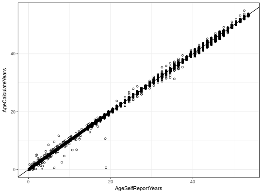

Each row represents a survey that a subject completed (or didn't complete). It can be very helpful when restructuring the NLS investigator extracts into a longitudinal dataset that's aligned by age (instead of by survey wave). The Age variables can help to align other response variables across subjects. While the 'SurveySource' indicates where to look for their responses.
These variables are useful to many types of analyses (not just behavior genetics), and are provided to save users time.
A data frame with 580,752 observations on the following 6 variables.
SubjectTag see the variable of the same name in Links79Pair
SurveySource The location of that subject's survey responses that year. Values are NoInterview, Gen1, Gen2C or Gen2YA.
SurveyYear The year/wave of the survey.
SurveyDate The exact date of the administered survey.
AgeSelfReportYears The subject's age, according to a their own response, or their mother's response.
AgeCalculateYears The subject's age, calculated from subtracting their birthday from the interview date.
Age The subject's age, which uses AgeCalculateYears or AgeSelfReportYears if it's not available.
Gen1 information comes from the Summer 2013 release of the NLSY79 sample. Gen2 information comes from the January 2015 release of the NLSY79 Children and Young Adults sample. Data were extracted with the NLS Investigator (https://www.nlsinfo.org/investigator/).
The AgeSelfReportYears and AgeCalculateYears variables usually agree, but not always. The Age variable uses AgeCalculateYears (or AgeSelfReportYears when AgeCalculateYears is missing).
The exact date of birth isn't public (only the subject's month of birth). To balance the downward bias of two weeks,
theri birthday is set to the 15th day of the month to produce AgeCalculateYears.
In the Gen2 Child dataset, self-reported age is stated by month (eg, the child is 38 months old); a constant of 0.5 months has been added to balance the downward bias. In the Gen2 YA and Gen1 datasets, self-reported age is stated by year (eg, the subject is 52 years old); a constant of 0.5 years has been added.
library(NlsyLinks) #Load the package into the current R session. summary(SurveyDate)#> SubjectTag SurveySource SurveyYear SurveyDate #> Min. : 100 NoInterview:257047 Min. :1979 Min. :1979-01-03 #> 1st Qu.: 313900 Gen1 :236338 1st Qu.:1985 1st Qu.:1985-03-15 #> Median : 619752 Gen2C : 52038 Median :1990 Median :1991-09-23 #> Mean : 618530 Gen2YA : 35329 Mean :1992 Mean :1993-02-13 #> 3rd Qu.: 914403 3rd Qu.:1998 3rd Qu.:2000-08-12 #> Max. :1268600 Max. :2010 Max. :2011-01-19 #> NA's :257048 #> AgeSelfReportYears AgeCalculateYears Age #> Min. : 0.12 Min. : 0.00 Min. : 0.00 #> 1st Qu.:18.50 1st Qu.:18.48 1st Qu.:18.48 #> Median :24.50 Median :24.73 Median :24.73 #> Mean :25.34 Mean :25.31 Mean :25.31 #> 3rd Qu.:32.50 3rd Qu.:32.31 3rd Qu.:32.31 #> Max. :53.50 Max. :54.92 Max. :54.92 #> NA's :257233 NA's :257048 NA's :257047table(SurveyDate$SurveyYear, SurveyDate$SurveySource)#> #> NoInterview Gen1 Gen2C Gen2YA #> 1979 11512 12686 0 0 #> 1980 12057 12141 0 0 #> 1981 12003 12195 0 0 #> 1982 12075 12123 0 0 #> 1983 11977 12221 0 0 #> 1984 12129 12069 0 0 #> 1985 13304 10894 0 0 #> 1986 8581 10655 4962 0 #> 1987 13713 10485 0 0 #> 1988 8064 10465 5669 0 #> 1989 13593 10605 0 0 #> 1990 7971 10436 5791 0 #> 1991 15180 9018 0 0 #> 1992 8674 9016 6508 0 #> 1993 15187 9011 0 0 #> 1994 8287 8889 6042 980 #> 1996 8494 8636 5396 1672 #> 1998 8764 8399 4896 2139 #> 2000 9755 8033 3385 3025 #> 2002 9047 7724 3189 4238 #> 2004 9058 7661 2455 5024 #> 2006 8944 7654 1756 5844 #> 2008 8936 7757 1200 6305 #> 2010 9742 7565 789 6102table(is.na(SurveyDate$AgeSelfReportYears), is.na(SurveyDate$AgeCalculateYears))#> #> FALSE TRUE #> FALSE 323518 1 #> TRUE 186 257047if( require(ggplot2) & require(plyr) ) { dsSourceYear <- plyr::count(SurveyDate, c("SurveyYear", "SurveySource")) dsSourceYear <- dsSourceYear[dsSourceYear$SurveySource != "NoInterview", ] ggplot(dsSourceYear, aes(x=SurveyYear, y=freq, color=SurveySource)) + geom_line(size=2) + geom_point(size=5, shape=21) + scale_color_brewer(palette = "Dark2") + theme_bw() + theme(legend.position=c(0,0), legend.justification=c(0,0)) ggplot(SurveyDate, aes(x=AgeSelfReportYears, y=AgeCalculateYears)) + geom_abline() + geom_point(shape=21) + theme_bw() }#> Warning: Removed 257234 rows containing missing values (geom_point).